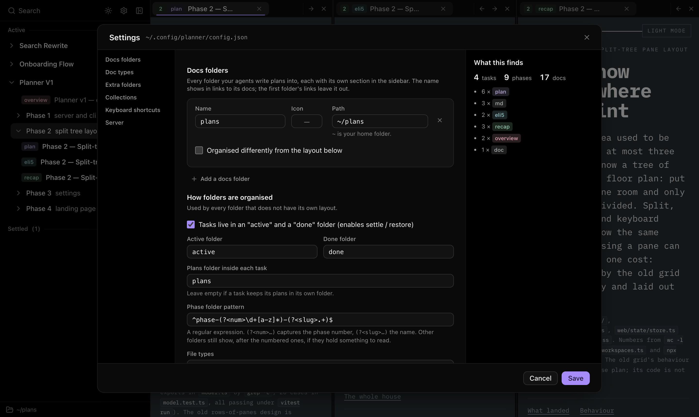
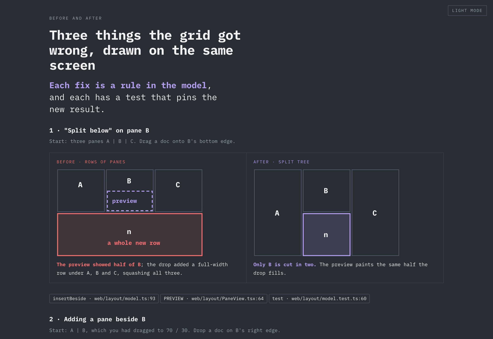
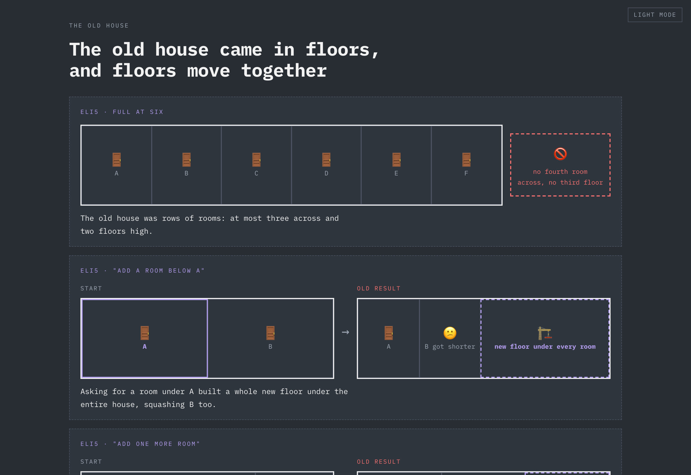
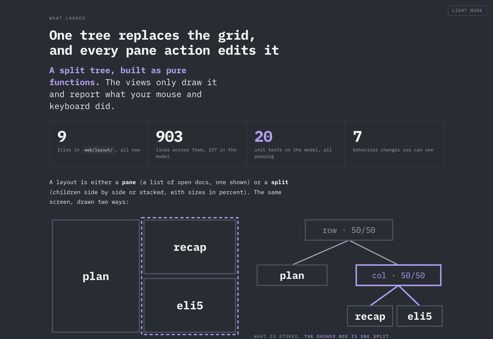
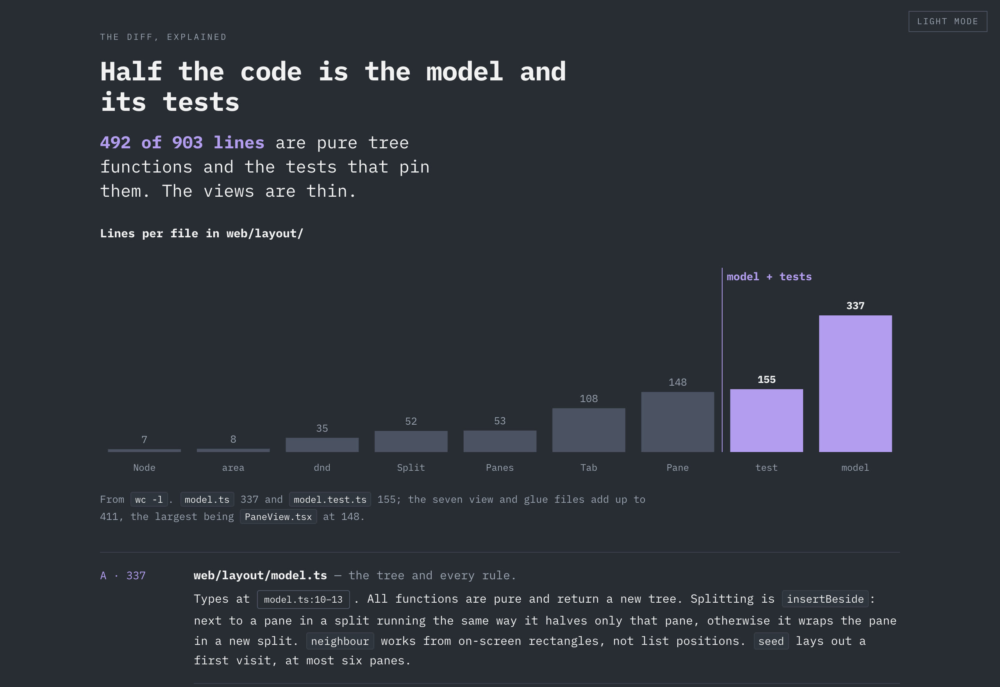

Keep up with what
your agents plan.
A local dashboard for the HTML and Markdown plans your coding agents write. Every phase side by side, live the moment it lands. Works with any agent that writes files.
Why it exists
Reviewing plans became the bottleneck.
Once agents were writing most of the code, writing code stopped being the slow part of my day. Reading their plans was. Every task left a plan, an explainer and a recap scattered across folders, and I was skimming them in an editor tab, or not reading them at all. When an agent did link me a plan, every link opened another browser tab, until I had dozens and couldn't tell which was current.
I built this at work so reviewing would be fast enough that I'd actually do it, every time, and stay in the loop on what my own codebase was becoming.
— @limyuquan, author
Bring your own agent
Planner doesn't talk to any model. It reads the folder your agents already write plans into, so it works with whichever one you use today.
writes plan.htmlwrites recap.mdwrites eli5.htmlwrites plan.mdwrites notes.mdwrite anything- No accounts or API keys
- Nothing leaves your machine
- HTML and Markdown, PDFs and images too
Read a whole phase at once.
Each phase of a task is a workspace. Open it and every plan lands in its own pane, then split, drag and resize like your editor. Your arrangement is remembered per phase.
- Split any pane right or down, drag tabs onto any edge
- The highlight shows exactly where a tab will land
- Move tabs with ⌥ + arrows, even from inside a plan
- Scroll position kept per tab
Live as they land.
When an agent writes a new plan you get a notification naming the task and phase, with one button to open it in place. Plans you have open reload when they change, and keep your place.
- Notifications for new plans, even in a background tab
- Edited plans reload in place
- Settle finished tasks into a done folder, with Undo
# the agent finished phase 2 and shows you the plan
$ planner open \
'?ws=planner-v1/phase-2-split-tree-layout&plan=plan'
✓ showed it in your dashboard tab
# every view has a link that survives settling
http://localhost:4173/?ws=planner-v1/phase-3-settings&plan=plan.htmlLet your agent show you.
Instead of pasting a file path, your agent runs one command and the plan appears in the tab you already have open. The address bar always names what's on screen, so links can go in chats and other plans.
planner open <link>reuses your open tab, so tabs don't pile up- Links inside plans open as tabs, absolute paths included
- A ready-made
link-planskill for your agent

Your folders, your rules.
Point Planner at every folder your agents write into, one per project if you like, each organised its own way. Folder names, phase naming, file types and badges are settings, not code, and the settings page shows what a change would find before you save it.
- Several docs folders, each with its own section and layout
- Let your agent set it up:
planner config addandcheck - A plain JSON file with a schema, easy to keep in your dotfiles
Agent skills
Plans worth reading.
The repo includes the visualise skill I use to have agents write plans as pages: a verdict up
top, the numbers that matter, a diagram, and a picture-book explanation at the end of every section.




Your agents' plans deserve
better than an editor tab.
Needs Node.js 20 or newer. Runs on macOS, Linux and Windows.
$ npm install -g \
https://github.com/limyuquan/planner/releases/latest/download/planner.tgz
$ plannerThen pick your docs folder in the browser, or try --root examples/demo-docs.